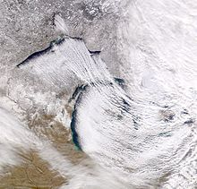

Lake-effect snow is produced during cooler atmospheric conditions when a cold air mass moves across long expanses of warmer lake water, warming the lower layer of air which picks up water vapor from the lake, rises up through the colder air above, freezes and is deposited on the leeward (downwind) shores.
The same effect also occurs over bodies of salt water, when it is termed ocean-effect or bay-effect snow. The effect is enhanced when the moving air mass is uplifted by the orographic influence of higher elevations on the downwind shores. This uplifting can produce narrow but very intense bands of precipitation, which deposit at a rate of many inches of snow each hour, often resulting in a large amount of total snowfall.
The areas affected by lake-effect snow are called snowbelts. These include areas east of the Great Lakes, the west coasts of northern Japan, the Kamchatka Peninsula in Russia, and areas near the Great Salt Lake, Black Sea, Caspian Sea, Baltic Sea, and parts of the northern Atlantic Ocean.
